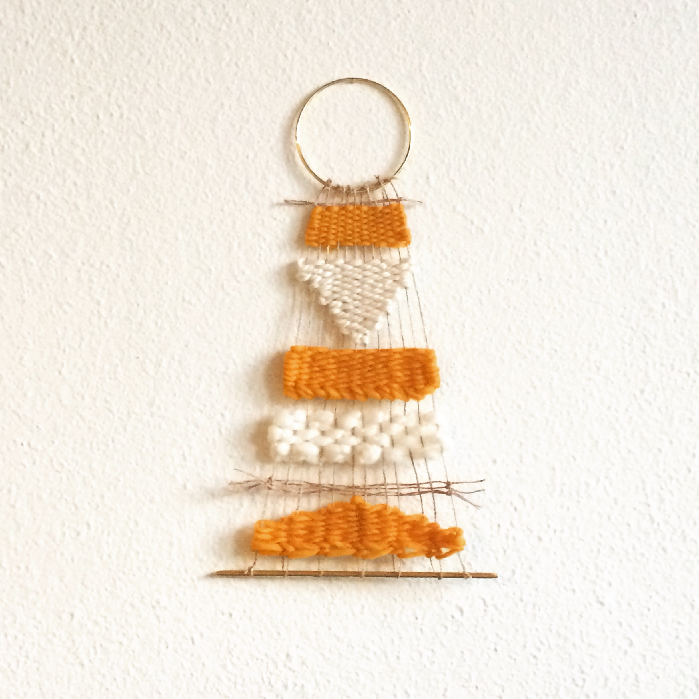

I use yarn to create textile art and accessories by weaving and knitting. I've made a lot of different products with yarn, including wall hangings, throw pillows, blankets, hats, scarves & face masks. You can follow the ball of yellow yarn through all of the projects where I've used it.
Woven Wall Hanging
This is the first project where I used the yellow yarn. I used a small tapestry loom to make this wall hanging that was inspired by a Mexican textile that I saw in an antique store. I love tapestry weaving because you can easily create different shapes and textures using different colors and types of yarn. I decided to learn how to weave after seeing beautiful Peruvian textiles at the Brooklyn Museum. It is my dream to travel to Peru and visit one of the few weaving communities that still exist there.
Woven Textile for a Pillow
My second project with the yarn was a woven fabric to make a throw pillow. I used a rigid-heddle loom for this project. The benefit of using this kind of loom is that you can make larger pieces of fabric. It is also good if you have large parts of repeating patterns. The design for this fabric was inspired by a colorful basket that I found at an antique store. I like how the yellow color pops alongside the red and grey. I used this fabric to make a throw pillow.
Knitted Scarf
For my third project, I knitted a long scarf with blocks of yellow, pink & taupe. I love knitting, because it is fascinating to me how many different things you can make out of one strand of yarn. One difference between knitting and weaving is that you can shape the fabric as you knit, so you don't have to sew pieces together. Another difference is how long it takes to make something. Weaving is quick, but this scarf took a month to make! One thing I really like about knitting is that all you need to know are two basic stitches to be able to make so many things. So, even beginners can make really cool projects.
Face Mask
During quarantine, I made face masks for friends, family, and my etsy shop. I added designs with yarn to make them more fun to wear, like this one with yellow yarn that says "hello"!